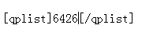

关于对棋谱库的调整，要赚金币的进来
首页
站务管理
#1 关于对棋谱库的调整，要赚金币的进来 作者：小丸.net 发表时间：2013-7-19 15:33:42
现对棋谱谱作如下调整
1 上传一张棋谱 加200金币 如你是实名制用户，上传的是自己的棋谱【即实名认证的真实姓名与上传棋谱中棋手中任何一位相同】，可额外获得300金加成。即500金。 点击这里查看如何获得实名
2 看一张棋谱 扣除1金币 扣除的金币不再归上传者所有
3 上传的棋谱被管理员、自己删除 扣200金币 实名制自己的棋谱同样扣500
4 写棋评在棋评中引用自己上传的棋谱可获得每个棋谱1金币奖励 看谱者需支付相应金币 5.未登录不能查阅贴子中引用的棋谱
如何引用棋谱
在棋谱显示页找到棋谱ID
然后使用qplist引用

最后得到引用的棋谱信息
本站将加强对重复、无效的棋谱进行审核，如发现重复、无效的棋谱一概删除，并扣除上传者金币200，实名制自己的谱同时扣除500。。。。
［此帖子已被 小丸.net 在 2013-7-19 16:40:49 编辑过］
［此帖子已被 小丸.net 在 2013-7-19 17:00:40 编辑过］
#2 Re:关于对棋谱库的调整，要赚金币的进来 作者：鱼岛岛主 发表时间：2013-7-19 15:49:37
发家致富的新道路
#3 Re:关于对棋谱库的调整，要赚金币的进来 作者：绿灯侠 发表时间：2013-9-1 19:14:03
上传自己的棋谱也可以？
#4 Re:关于对棋谱库的调整，要赚金币的进来 作者：我菜菜 发表时间：2013-9-3 16:22:22
看一张棋谱要扣1金。。穷人的噩耗。 ［ 小丸.net同学于 2013-9-3 19:38:37 时花250金币拍了你一板砖］
#5 re:关于对棋谱库的调整，要赚金币的进来 作者：小丸.net 发表时间：2013-9-3 19:35:23
上传一张棋谱200金币，穷人的福音
#6 Re:关于对棋谱库的调整，要赚金币的进来 作者：小红眼镜 发表时间：2013-10-5 9:49:08
#7 Re:关于对棋谱库的调整，要赚金币的进来 作者：小红眼镜 发表时间：2013-10-5 9:51:43
回复错地方了。。。
#8 Re:关于对棋谱库的调整，要赚金币的进来 作者：雄鹰王 发表时间：2014-1-22 17:09:44
楼主，您好，我想在棋谱库中上传2014年百度贴吧五子棋吧王中王五子棋大赛的全部棋谱，不知道能否帮忙开一个分类？
一共有七轮比赛，大约50张棋谱，对局的质量应该还算是可以的。谢谢！
#9 Re:关于对棋谱库的调整，要赚金币的进来 作者：小红眼镜 发表时间：2014-1-22 19:39:02
楼上，这事儿你直接找屏蔽。
#10 Re:小红眼镜【==Re:关于对棋谱库的调整，要赚金币的进来==】 作者：雄鹰王 发表时间：2014-1-22 19:42:49
屏蔽说他以后不管这件事情了
#11 Re:关于对棋谱库的调整，要赚金币的进来 作者：小红眼镜 发表时间：2014-1-22 20:05:10
哦。。。那。。预祝你明年夏天荷花盛开之前早日申请成功。
#12 Re:关于对棋谱库的调整，要赚金币的进来 作者：梦回千年之恋 发表时间：2014-1-26 13:13:06
刚看到・・・・
#13 Re:关于对棋谱库的调整，要赚金币的进来 作者：刘老师 发表时间：2014-1-29 15:52:31
看也要扣金币吗